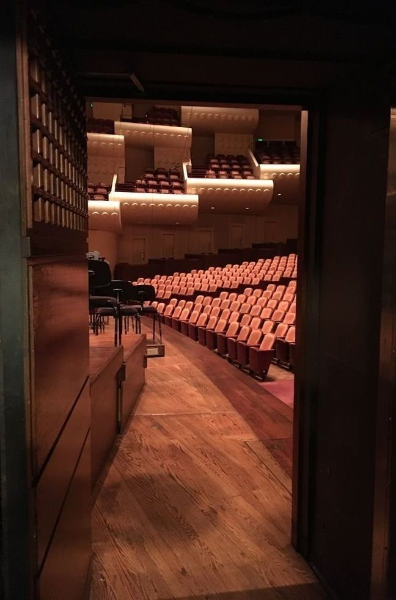

연혁
2018년 9월에 개관한 음악당의 연혁과 건물 수치, 사진 출처입니다.

연혁
- 2014년 5월
- 설계 공모 · 412석 신발 상자형 실내악홀 안 선정
- 2016년 3월
- 착공 · 홀 바닥과 벽을 건물 뼈대에서 띄운 뜬 구조(진동 차단)
- 2018년 9월
- 개관 · 첫 공연: 현악 4중주 두 팀의 8중주
- 2019년 4월
- 피아노 A(콘서트 그랜드 274 cm) 도입
- 2021년 2월
- 객석 의자 천 교체 · 빈 자리와 앉은 자리의 흡음 차이 축소
- 2023년 8월
- 무대 반사판 새로 설치 · 판 9장 각도 개별 조절
- 2025년 6월
- 1층 D~H열 보청 루프 설치
- 2026년 3월
- 하프시코드 건반·깃촉 수리
건물
- 형식
- 신발 상자형 실내악홀
- 좌석
- 412석(1층 340 · 2층 72) · 휠체어석 6
- 실 부피
- 4,600 m³
- 홀 길이 · 폭 · 높이
- 31 m · 21 m · 14.5 m
- 벽
- 목재 판(뒤에 공기층)
- 천장
- 석고 판 두 겹
가상 고지
가상의 음악당입니다. 일정·값·좌석·출연자 이름은 지어낸 것이며, 예매·신청 내용은 전송되지 않습니다.
연주곡: 작곡가 사후 70년이 지난 작품 · 잔향 값: 세이빈 식 근사 · 흡음률: 재료군의 일반 값
사진 출처
- 나무 판을 두른 홀의 발코니와 객석
- Pinterest 핀 · 라이선스 미확인
- 연주가 끝난 무대의 의자와 보면대
- Pinterest 핀 · 라이선스 미확인
- 붉은 천을 씌운 객석 의자
- Pinterest 핀 · 라이선스 미확인
- 그랜드 피아노 안쪽의 현과 붉은 펠트
- Pinterest 핀 · 라이선스 미확인
- 조각 장식이 있는 옛 건반의 앞면
- Pinterest 핀 · 라이선스 미확인
- 무대 위에 놓인 구리 팀파니 넷과 의자
- Pinterest 핀 · 라이선스 미확인
- 무대 옆문에서 본 객석
- Pinterest 핀 · 라이선스 미확인
- 홀 뒤쪽 벽의 세로 목재 판
- Pinterest 핀 · 라이선스 미확인
사진은 분위기 참고용입니다. Pinterest 사진은 원 게시자의 저작물이며, 요청이 있으면 교체합니다.